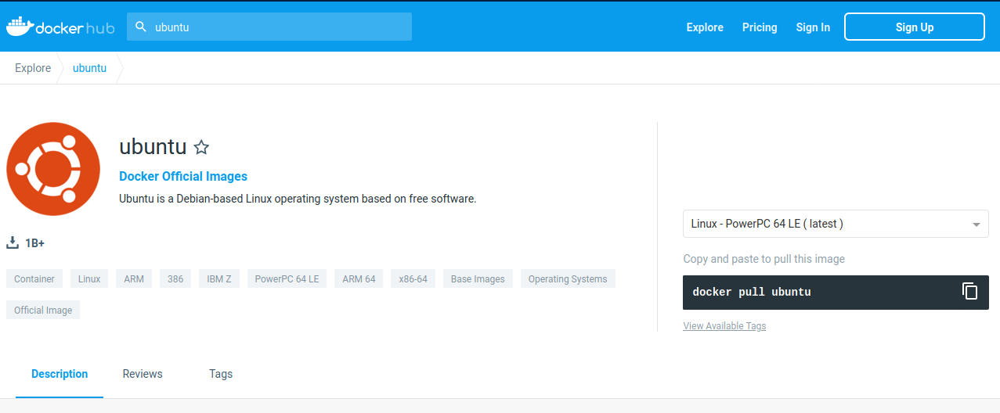
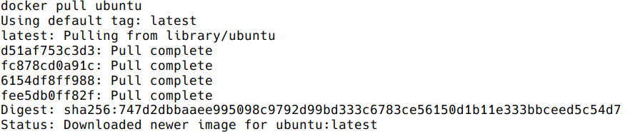
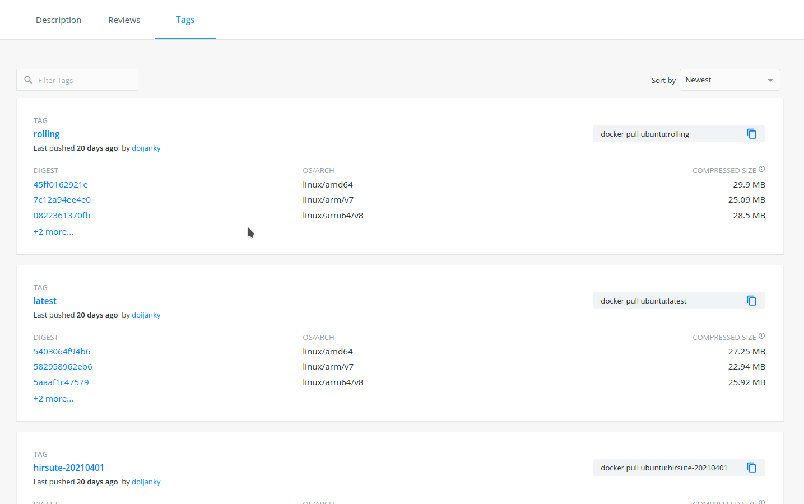
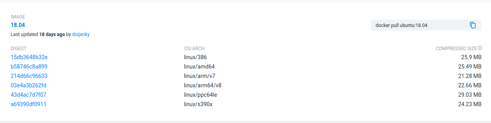
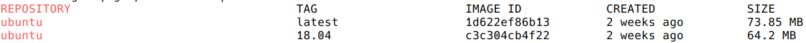
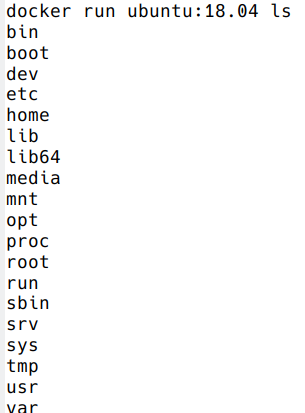

3.2 Using existing images
3.2.1 Getting started
Run the following in the terminal:
The docker images command lists the Docker images that you have on your computer.
Now run the following:
Run docker images again: now you see the “hello-world” image listed!
docker pull imports an image from - by default - Docker hub.
We will see in more details the docker images and docker run commands, but let’s first explore the Docker images repositories.
3.2.2 Explore Docker hub
Images can be stored locally or shared in a registry.
Docker hub is the main public registry for Docker images.
Let’s search the keyword ubuntu:

You can also search existing Docker images with the docker search command.
Example: let’s look for images that have the keyword blast in their name or description.
Too many results? You can apply some filters:
- Minimum number of stars:
docker search blast --filter stars=5 - The image is an official build:
docker search blast --filter is-official=true - The image is an automated build:
docker search blast --filter is-automated=true
# Apply one filter
docker search blast --filter stars=2
# Apply more than one filter
docker search blast --filter is-automated=true --filter stars=2HANDS-ON
Use docker search to find a Docker image for the keyword ubuntu. Using the filters, answer the following questions:
- How many images are official builds?
- How many images have 3 or more stars?
- How many images are official builds AND have 3 or more stars?
- What is the NAME of the image with the highest number of stars?
3.2.3 docker pull: import an image
Say we are now interested in the ubuntu image from Docker hub. We can retrieve it with docker pull.
- By default, we get the latest image / latest release.

- You can choose the version of Ubuntu you are fetching: check the different tags on the website (latest is also a tag):

Note:
docker searchdoesn’t allow to search for tags.
Let’s get the Ubuntu image with tag 18.04 (version 18.04 of Ubuntu = bionic):

Where is the image now?
As we have seen before, you can docker images in the terminal, to see a list of the most recently created images. docker images gives you information such as:
- Repository
- Tag
- Unique image ID
- Creation date
- Image size

HANDS-ON
- Run
docker images. How many images do you get? - Pull the latest
biocontainers/blastimage- What is the size of the
blastimage you just pulled?
- What is the size of the
- How many images do you get if you run
docker images --all? What are those? Perhaps the documentation can help.
Answer
# Pull the blast image
docker pull biocontainers/blast
# Run `docker images --all`
docker images --all # intermediate images.3.2.4 docker run: run image, i.e. start a container
Now we want to use what is inside the image.
docker run creates a fresh container (active instance of the image) from a Docker (static) image, and runs it.
The format is:
docker run image:tag command (command being a command called inside the image)
We can start a container from the ubuntu tag 18.04 image, executing the command ls (stored in /bin in the container).

Now execute ls in your current working directory: is the result the same?
You can execute any program/command that is stored inside the image:
You can either execute programs in the image from the command line (see above) or execute a container interactively, i.e. “enter” the container, with docker run -it.
If you want to leave and stop the container, type exit and ENTER.
HANDS-ON
- Run the hello-world image:
- What is happening?
- Now run the blast image we previously pulled:
- Is something happening?
- Start again a container from the same blast image (not interactively), and run the blastp command. What happens?
- Start a container interactively from the same blast image:
- What is the default working directory? What is inside the directory?
- Where is the
blastpprogram located in the image? - Exit the container.
Answer
# Run the hello-world image
docker run hello-world
# Run the blast image
docker run biocontainers/blast:latest
# Start again a container from the same blast image, and run the path to the blastp command:
docker run biocontainers/blast:latest blastp
# Start a container interactively from the same blast image:
docker run -ti biocontainers/blast:latest
# What is the default working directory?
pwd; ls
# Where is the `blastp` program located in the image?
which blastp
# Exit the container.
exitYou can run the container as daemon (in background), instead of the default foreground running, with the --detach parameter:
Run container as daemon (in background) with a given name:
3.2.5 docker ps: check containers status
List running containers:
List all containers (whether they are running or not):
Each container has a unique ID.
3.2.6 docker exec: execute process in running container
Difference between docker run and docker exec:
docker runcreates a temporary container, runs the command and stops the container.docker execneeds an already running container to query the command (i.e. a detached container).
- Interactively
3.2.7 docker stop, start, restart: actions on container
Stop a running container with docker stop.
# check the list of running containers
docker ps
# stop the myubuntu container
docker stop myubuntu
# check the list of all containers
docker ps -aStart a stopped container (does NOT create a new one):
Restart a running container:
Run with restart enabled (by default, Docker does not automatically restart the container when it exits).
In the example below we start a detached container named “myubuntu2” with the unless-stopped restart policy: restart the container unless it is explicitly stopped or Docker itself is stopped or restarted.
- Restart policies: no (default), always, on-failure, unless-stopped
Update restart policy:
HANDS-ON
- Start a container from the “hello-world” image in the background. Give it a name.
- Is your container running? Can you explain why (or why not)?
- Start another detached container from the same image (with a new name), with the always restart policy.
- Is the container running?
3.2.8 docker rm, docker rmi: clean up!
docker rm is used to remove a container (set -f is the container is running, to force the removal):
docker rmi is used to remove an image:
HANDS-ON
- Remove any container (whether it is running or not).
- Remove the “hello-world” image.
Answer
3.2.8.1 Major clean
Check used space:
Remove unused containers (and others) - DO WITH CARE
Remove ALL non-running containers, images, etc. - DO WITH MUCH MORE CARE!!!
3.2.9 Exercise
Should we keep this?? not sure..
- Search and pull the
alpineimage (tag 3.12) - it is an official build. - Can you run a container from this image and make it print a “hello world” message?
- Now run a container interactively from the same image.
- Run
uname -a - Exit the container.
- Run
- Restart the container you just exited:
- Is it now running?
- Make the container execute the command
ls - Stop the container
- Remove the alpine image and all its containers (running or stopped)
Answer
# Search and pull the alpine image (tag 3.12) - it is an official build.
docker search alpine --filter is-official=true
docker pull alpine:3.12
# Can you run a container from this image and make it print a “hello world” message?
docker run alpine:3.12 echo "hello world"
# Now run a container **interactively** from the same image.
docker run -ti alpine:3.12
# Run `uname -a`
uname -a
# Exit the container.
exit
# Restart the container you just exited: is it now running?
docker restart CONTAINER_ID # find it with `docker ps -a`
# Make the container execute the command `ls`
docker exec CONTAINER_ID ls
# Stop the container
docker stop CONTAINER_ID
# Remove the alpine image and all its containers (running or stopped)
docker rmi alpine:3.12
docker rm CONTAINER_ID # check all containers with `docker ps -a`